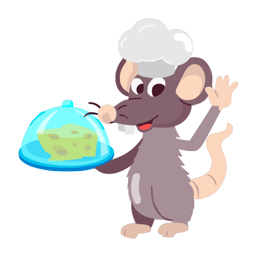

Welcome to Chef Ratatouille's Portfolio
A grand chef from Paris, now cooking in Vancouver 🇨🇦
-  Master of Technique: Knows how to handle ingredients with precision and skill.
- Exceptional Palate: Can balance flavors and seasonings like a true artist.
- Creative Vision: Constantly innovates and brings fresh ideas to the plate.
- Clean & Organized: Maintains a spotless kitchen and efficient workflow.
- Time Management: Delivers dishes promptly without compromising quality.
- Team Leader: Inspires and guides the kitchen staff with respect and clarity.
- Passion for Food: Cooks with heart, turning meals into memorable experiences.
The Journey
Born beneath the cobblestones of Paris, Chef Ratatouille rose from the shadows of the city’s finest kitchens. Trained in the art of flavor and finesse, he once dazzled the elite with his daring dishes. But when the city turned its back on innovation, he was cast out — not for lack of talent, but for having too much of it.
Now, with nothing but a suitcase full of spices and a heart full of fire, he’s landed in Vancouver. Here, he’s ready to rewrite his legacy — one plate at a time. This portfolio is his open kitchen: a place to showcase his passion, his rebellion, and his recipes that defy borders.
Paris may have closed its doors… but Canada just opened its heart.